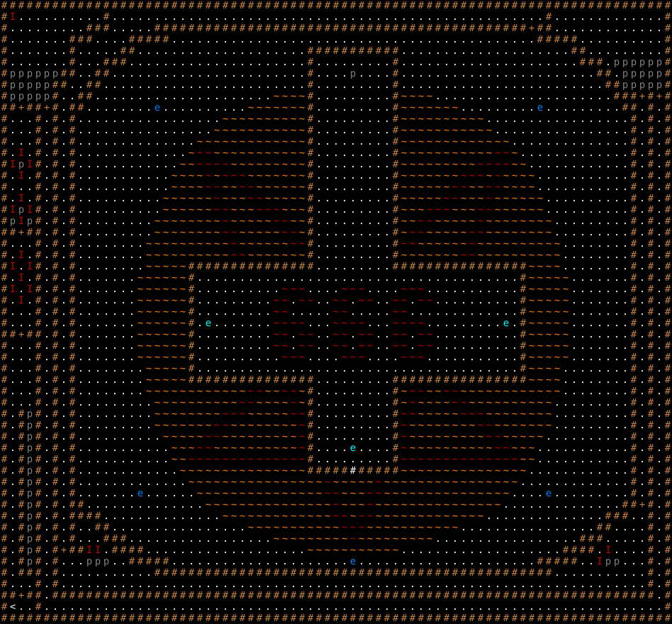

マイクロンフトの興亡 / The Rise and Fall of Micro$oft
固定クエスト「マイクロンフトの興亡」の達成条件・報酬・地形・出現モンスター・クエストメッセージ。
Fixed quest "The Rise and Fall of Micro$oft": objective, reward, terrain, monsters and messages.
← クエスト一覧 / All quests · 🏠 ホーム / Home
概要 / Overview
| 項目 | 内容 |
|---|---|
| 受注箇所 | モリバント（BUILDING_1） |
| 種別 | 特定ユニーク撃破 |
| 対象Lv（危険度） | 50 |
| 目標 | リンゴ嫌い『ブル・ゲイツ』 / Bull Gates, the applephobe |
| 前提クエスト | 20: 謎の障気 |
| 報酬 | 耐劣化の指輪 |
| フラグ | PRESET / ONCE |
達成条件 / Objective
目標モンスターを 1 体撃破 すると達成。
報酬 / Reward
達成後、依頼建物の前に出現する。
- 耐劣化の指輪
クエストメッセージ / Messages
依頼時
壁におどろおどろしい「Ｍ＄」というルーン文字が刻まれている、謎の
建物が現れました。この建物は悪のオーラを発しています。
近くの村の人々は金と理性を失い、心を持たぬゾンビとなってしまい
ました。気をつけて下さい！あの巨大な悪の城に棲む暗黒の帝王は
黙示録の獣そのものであると噂されています。そしてあの建物の中にどんな
言うもおぞましい秘密が潜んでいるのかは誰も知りません。
達成（報酬）時
悪魔を打ち倒してくれてありがとうございます！ささやかなお礼を
外に置いておきました。
失敗時
あなたは恐ろしいことをしてしまった！マイクロンフトは今この
街、いやこの国、いや全世界で全ての市場を独占している！
あらゆる場所のあらゆる商品はＭ＄のライセンス商品となり、
Ｍ＄が利益を徴収している。しかも将来品質が改善される
保証は全く無いのだ！あなたはまだ額にマイクロンフトの
公式ライセンス番号をつけてないようだが、番号をもらわない内は
きっと誰もあなたに物を売ってくれないよ。
出現モンスター / Monsters
| 記号 | 表示 | モンスター | 体数 |
|---|---|---|---|
a |
I（Red） | ソフトウェア・バグ / Software bug | 16 |
e |
p（Dark Gray） | 大盗賊 / Master rogue | 16 |
b |
p（Dark Gray） | 見習盗賊 / Novice rogue | 12 |
f |
p（Dark Gray） | 大泥棒 / Master thief | 11 |
d |
p（Dark Gray） | 追い剥ぎ / Bandit | 8 |
% |
p（Dark Gray） | 大泥棒 / Master thief | 5 |
h |
e（Blue） | エッヂ / Chronium edge | 5 |
& |
I（Red） | ソフトウェア・バグ / Software bug | 4 |
c |
p（Dark Gray） | 見習盗賊 / Novice rogue | 3 |
i |
e（Light Blue） | インターネット・エクスプローダー / Internet Exploder | 3 |
g |
p（Dark Gray） | リンゴ嫌い『ブル・ゲイツ』 / Bull Gates, the applephobe | 1 |
地形・マップ / Map
初期位置と固定配置。記号の意味は下の凡例を参照。

ASCIIマップ
XXXXXXXXXXXXXXXXXXXXXXXXXXXXXXXXXXXXXXXXXXXXXXXXXXXXXXXXXXXXXXXXXXXXXXXXXXXXXXX
Xa.A......AAXtttttttttttttttttttttttttttttttttttttttttttttttttttXABAA.........X
X.......B.XXXtttttXXXXXXXXXXXXXXXXXXXXXXXXXXXXXXXXXXXXXXXXXXXX+XXAAAA.........X
X...B...XXXttttXXXXX...........................................XXXXX..........X
X.......XtttttXX....................XXXXXXXXXXX....................XX.........X
X.......XtttXXX.....................XsssssssssX.....................XXX.eeeeeeX
XffffffXXttXX.......................XssssgssssX.......................XX.eeeeeX
XdddddXXttXX........................XsssssssssX........................XXfffffX
XeeeeeXttXX.....................llllXsssssssssXllll.....................XXX+X+X
XX+XX+XtXX........h..........lllllllXsssssssssXlllllll.........h.........XXtXtX
X...XtXtX.................llllllllllXsssssssssXllllllllll.................XtXtX
X...XtXtX................lllllllllllXsssssssssXlllllllllll................XtXtX
X...XtXtX..............lllllllllllllXsssssssssXlllllllllllll..............XtXtX
X.a.XtXtX.............l55lllllllllllXsssssssssXlllllllllll55l.............XtXtX
XabaXtXtX............ll5555lllllllllXsssssssssXlllllllll5555ll............XtXtX
X.a.XtXtX...........llll5l555lllllllXsssssssssXlllllll555l5llll...........XtXtX
X...XtXtX...........llll55ll55llllllXsssssssssXllllll55ll55llll...........XtXtX
X.a.XtXtX..........llllll5lll55lllllXsssssssssXlllll55lll5llllll..........XtXtX
XabaXtXtX..........llllll55lll555lllXsssssssssXlll555lll55llllll..........XtXtX
XdadXtXtX.........llllllll5lllll55llXsssssssssXll55lllll5llllllll.........XtXtX
XX+XXtXtX.........llllllll55lllll55lXsssssssssXl55lllll55llllllll.........XtXtX
XA..XtXtX........llllllllll5llllll55XsssssssssX55llllll5llllllllll........XtXtX
X.a.XtXtX........llllllllll55lllllIEXsssssssssXFJlllll55llllllllll........XtXtX
Xa.aXtXtX........lllllXXXXXXXXXXXXXXXsssssssssXXXXXXXXXXXXXXXXllll........XtXtX
X.a.XtXtX.......llllllXssssssssssssssssssssssssssssssssssssssXlllll.......XtXtX
Xa.aXtXtX.......llllllXssssssssss666ssss666ssss666sssssssssssXlllll.......XtXtX
X.a.XtXtX.......llllllXsssssssss66s66ss66s66ss66s66ssssssssssXlllll.......XtXtX
X..BXtXtX.......llllllXsssssssss66sssss66sssss66sssssssssssssXlllll.......XtXtX
X...XtXtX.......llllllXsisssssss6666sss6666sss6666sssssssssisXlllll.......XtXtX
XX+XXtXtX.......llllllXsssssssss66s66ss66s66ss66s66ssssssssssXlllll.......XtXtX
X...XtXtX.......llllllXsssssssss66s66ss66s66ss66s66ssssssssssXlllll.......XtXtX
X...XtXtX.......llllllXssssssssss666ssss666ssss666sssssssssssXlllll.......XtXtX
X...XtXtX........lllllXssssssssssssssssssssssssssssssssssssssXllll........XtXtX
X...XtXtX........lllllXXXXXXXXXXXXXXXsssssssssXXXXXXXXXXXXXXXXllll........XtXtX
X...XtXtX........llllllllllll55ll55DXsssssssssXC55ll55llllllllllll........XtXtX
X...XtXtX.........llllllllll55llll5HXsssssssssXG5llll55llllllllll.........XtXtX
X.XbXtXtX.........llllllll555lllll55XsssssssssX55lllll555llllllll.........XtXtX
X.XbXtXtX.........lllllll55llllllll5XsssssssssX5llllllll55lllllll.........XtXtX
X.XbXtXtX..........lllll55lllllllll5XsssssssssX5lllllllll55lllll..........XtXtX
XAXbXtXtX...........lll55llllllllll5XssssissssX5llllllllll55lll...........XtXtX
X.XbXtXtX...........ll55555555555555XsssssssssX55555555555555ll...........XtXtX
X.XbXtXtX............lllllllllllllllXXXXX#XXXXXlllllllllllllll............XtXtX
XAXbXtXtX.............llllllllllllllll5lllll5llllllllllllllll.............XtXtX
X.XbXtXtX.......h......lllllllllllllll55lll55lllllllllllllll....h.........XtXtX
X.XbXtXtXX..............lllllllllllllll5lll5lllllllllllllll..............XX+XtX
X.XbXtXtXXXX..............lllllllllllll55l55lllllllllllll..............XXX$$XtX
XAXcXtXtX$$XX................lllllllllll555lllllllllll................XX$$$$XtX
X.XcXtXtX$$$XXX.................lllllllll5lllllllll.................XXX$$$$$XtX
X.XcXtX+XX&&$XXXX...................lllllllllll...................XXXX$&$$$$XtX
X.XdXtX$$$%%%$$XXXXX.....................h.....................XXXXX$$&%%$$$XtX
X.XXXtX$$$$$$$$$$$XXXXXXXXXXXXXXXXXXXXXXXXXXXXXXXXXXXXXXXXXXXXXXX$$$$$$$$$$$XtX
XA.AXtX$$$$$$$$$$$$$$$$$$$$$$$$$$$$$$$$$$$$$$$$$$$$$$$$$$$$$$$$$$$$$$$$$$$$$XtX
XX+XXtXXXXXXXXXXXXXXXXXXXXXXXXXXXXXXXXXXXXXXXXXXXXXXXXXXXXXXXXXXXXXXXXXXXXXXXtX
X<..XtttttttttttttttttttttttttttttttttttttttttttttttttttttttttttttttttttttttttX
XXXXXXXXXXXXXXXXXXXXXXXXXXXXXXXXXXXXXXXXXXXXXXXXXXXXXXXXXXXXXXXXXXXXXXXXXXXXXXX
地形の凡例
| 記号 | 表示 | 地形 / 内容 |
|---|---|---|
X |
#（Light Brown） | 永久岩の壁 |
. |
.（White） | 床 |
A |
.（White） | 床 |
t |
.（White） | 床 |
B |
.（White） | 床 |
+ |
+（Light Brown） | ドア |
s |
.（White） | 床 |
l |
~（Orange） | 浅い溶岩の流れ |
5 |
~（Red） | 深い溶岩溜り |
I |
~（Orange） | 浅い溶岩の流れ |
E |
~（Orange） | 浅い溶岩の流れ |
F |
~（Orange） | 浅い溶岩の流れ |
J |
~（Orange） | 浅い溶岩の流れ |
6 |
~（Red） | 深い溶岩溜り |
D |
~（Orange） | 浅い溶岩の流れ |
C |
~（Orange） | 浅い溶岩の流れ |
H |
~（Orange） | 浅い溶岩の流れ |
G |
~（Orange） | 浅い溶岩の流れ |
# |
#（White） | 花崗岩の壁 |
$ |
.（White） | 床 ＋ 金塊 |
< |
<（White） | 上り階段 |
🤖 この解説ページは
tools/generate-wiki.mjsにより生成されています（出典:lib/edit/quests/*.txt,lib/edit/QuestPreferences.txt）。手動で編集しないでください — 変更は次回の再生成で上書きされます。内容の修正は生成スクリプトを編集してください。 生成 / Generated: 2026-07-05 07:41 UTC · hengband5ebae9734b·tools/generate-wiki.mjs